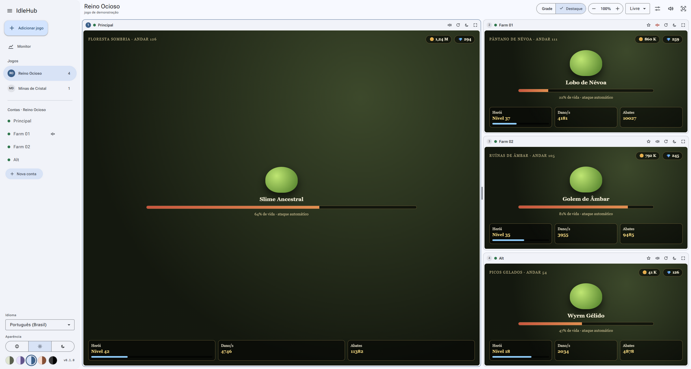

Layouts
Grade ou Destaque.
Todas as contas do mesmo tamanho, ou uma grande e as outras ao lado. Você ajusta tudo com o mouse.
- Arraste a divisória para dar mais espaço à conta principal
- Reorganize os painéis arrastando um sobre o outro
- Foque em uma conta com Ctrl+1…9; Esc volta
